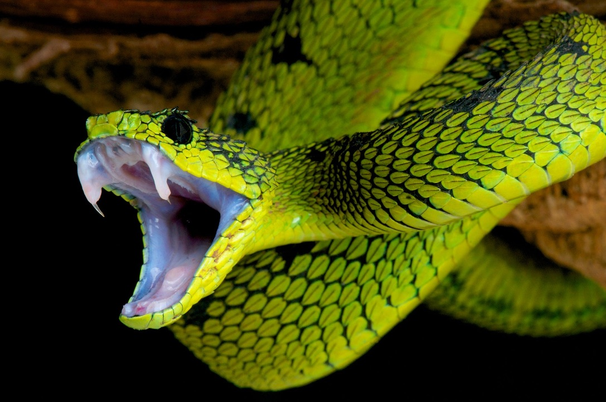
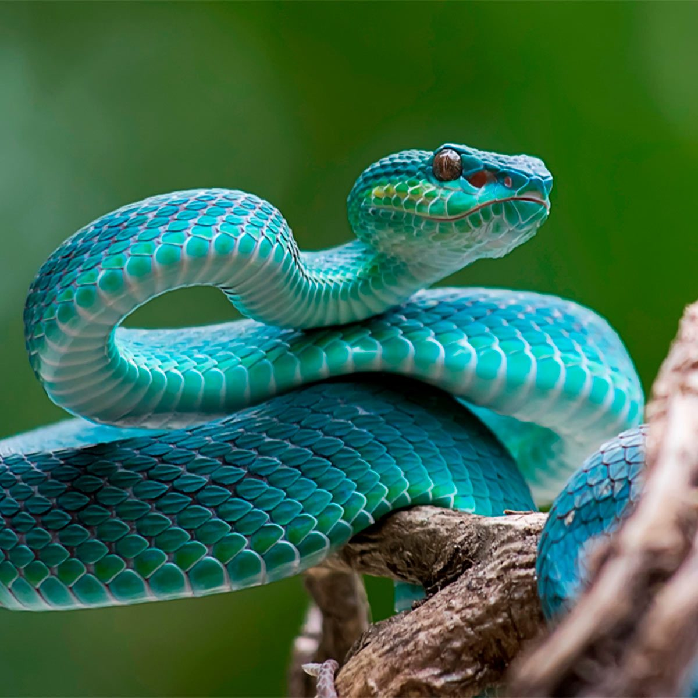

My name's Sid and I've made this charity to stop snakes becoming extinct,Snakes are animals that can be very friendly if you don't anger them or scare them. This is a fact that people know but ignore, people will usually try to kill snakes when they see them, therefore they are becoming rarer. There are some snakes in the world that can be poisonous, but if you encounter one, you should not try to kill it. You should just call a snake catcher and they will take care of it. The key to not angering or scaring snakes is to stay calm yourself, when snakes feel tense or worried, they will try to attack.

